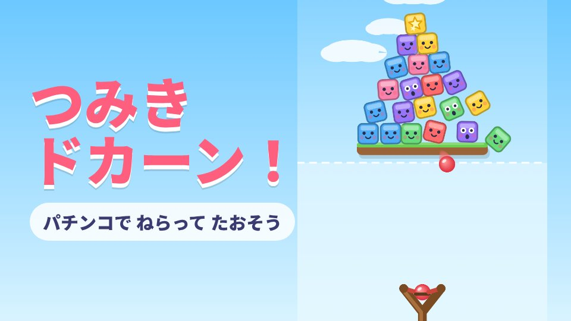

第1回 1/10（日） かんがえる
何が楽しいかは、
誰が決める？
親子で、作りたいゲームを考えて、紙に設計図をかく
親子でAIゲームづくり講座
この講座の問い
何が楽しいかは、
誰が決めるんだろう？
3回の中で、「自分たちが決めたこと」に注目してみてください。
全3回の流れ
考えて、作って、直して見せる
第1回 1/10
かんがえる
紙に設計図をかく
AIはまだ使いません
第2回 1/17
つくる
AIにたのんで動かす
保護者のAIのアカウントを使います
第3回 1/24
なおす・みせる
遊んで直し、見せ合う
内容は検討中です
どの回も日曜 10:00〜12:00、小川パレット5階 第一多目的室
今日の流れ（120分）
最初は苦労する。途中から、まとめ方を知る
| 時間 | 内容 |
|---|---|
| 5分 | はじめに：この講座の問い |
| 30分 | 講義：講師紹介、AIでできるようになったこと、今回作るゲーム、サンプルの実演 |
| 5分 | ワーク前半：白紙に、親子で自由に考える |
| 10分 | 中間講義：設計図で決めておくこと |
| 50分 | ワーク後半：設計図を書き、最後の10分でAIへのお願いの文に書き写す |
| 10分 | 宿題の説明（＋予備10分） |
今日のゴール：AIに渡せる「お願いの文」ができている
講師紹介 1/3
（差し替え）
おおすぎ なおや
大杉 直也
デジタル庁 源内班 ガバメントAIリードエンジニア
- 政府職員が使う生成AIの環境「ガバメントAI 源内」を、企画・立ち上げから開発・運用まで担当
- 2023年度から、行政職員向けの生成AIワークショップを企画し、講師もしている
- デジタル庁「テキスト生成AI利活用におけるリスクへの対策ガイドブック（α版）」（2024年）を執筆
- この講座のサンプルゲームは、講師がAIに頼んで作ったもの
寄り道の多い経歴：高校中退 → 千葉大学文学部に飛び入学 → 大学院でサルの脳波のデータ分析 → リクルート → 社会人のままN高等学校に入り、卒業 → デジタル庁
講師紹介 2/3 差し替え
（差し替え）
（ふりがな）
講師2の名前
（ふだんの仕事）
講師紹介 3/3 差し替え
（差し替え）
（ふりがな）
講師3の名前
（ふだんの仕事）
はじめに 作成中
なぜ、この講座を開くのか
講義 ①
言葉で頼むだけで、動くゲームが作れるようになった
できるようになったこと
- プログラムを書く手間が、大きく下がった
- 言葉で頼むと、AIがコードを書く
- 直したいことも、言葉で頼める
では……
作れるなら、必ず面白くなる？
同じゲームでも、楽しいと感じる人と、そうでない人がいる。
講義 ②
今回作るのは、ネットなしで動く
「HTMLファイル1つ」のゲーム
デジタルゲームのいろいろ
- ブラウザで遊ぶゲーム
- スマホのアプリ
- 家庭用のゲーム機
- ネットにつなぐもの、つながないもの
今回のゲーム
- ブラウザで遊ぶ
- インターネットにつながなくても動く
- HTMLファイル1つで完結
- ファイルを渡せば、人にも遊んでもらえる
苦手なこと：ランキングをみんなで共有する、ログイン、重い3D。iPhoneでは、ファイルが開けないことがある（AIの画面の中でなら遊べる）。
講義 ③ 実演
サンプルを見てみよう

つみきドカーン！
ボールで積み木をたおす、こども向けのゲーム。タップで落とす、引っぱって飛ばす。
平面（2D）・約160KB

ウォンバット☆レガシーRPG
コマンドを選んで戦うRPG。負けても失うものがなく、はじめての人でも最後まで遊べる。
平面（2D）・約150KB・約60分

INFINITE SHOT 3D
自動で前に進む3Dのシューティング。5分間を生き抜く。
立体（3D）・約620KB・有料プランで時間をかけて作成
見るところ：どこが面白い？ どう操作する？ どうなったら終わり？
講義 ④
AIに任せられること、自分たちで決めること
AIに任せられる
- コードを書く
- 画面や動きを作る
- 不具合を直す
- 案を出す
自分たちで決める
- 何が面白いか
- ルール、勝ち負け
- 難しさ（ちょうどよさ）
- その題材で大丈夫か
AIも案は出せる。でも、自分たちにとって何が楽しいかは、自分たちで考えてみないと分からない。
ワークの前に
親子のルールは、ひとつだけ
入力する前に、必ず子どもに確認する。
考えるのは親子いっしょに。決めるのは、遊ぶ人。
ワーク前半（5分）
白紙に、作りたいゲームを自由に書いてみよう
書いてみるもの（自由）
- どんなゲーム？
- どこが楽しい？
- 絵で描いてもいい
この5分のねらい
うまくまとまらなくて大丈夫。
「決めないとまとまらない」を体験する時間。
中間講義
AIに「面白いゲームを作って」とだけ頼んだら？
何が起きる？
AIは、それらしいゲームを作る。
でも、自分たちが思っていたゲームになるとは限らない。
だから
頼む前に、自分たちで決めておく。
決めたことを紙に書いておけば、そのままAIに渡せる。
白紙のワーク、うまくまとまった組、困った組は？（手を挙げてみよう）
中間講義
設計図で決めておくこと
| 項目 | 考えてみよう |
|---|---|
| 面白い点 | なぜ、ここを先に決めるとよい？ |
| 終わり方 | どうなったら終わり？ 決めないと、どうなる？ |
| イメージ図 | 言葉だけで伝えると、どうなる？ |
| ひとことで言うと | どんなゲーム？（近いジャンルは？） |
| 操作・ルール | 何をすると、どうなる？ |
| 遊ぶ端末 | スマホ？ パソコン？（操作が変わる） |
| 本物はどうなっている？ | 現実が題材なら、本物らしさで大事なところ |
| この題材で大丈夫？ | 人に見せて大丈夫？ 子ども向けにふさわしい？ |
中間講義
講師も、最初に決めておけばよかった
遊ぶ端末
キーボード☆ドライバーでは、最初に「スマホで」と伝えた。AIは作る前に「スマホだとキーボードの練習にならないのでは」と指摘した。
本物らしさ
ゴルフでは「コースは本当にありそうな感じに」、子育てゲームでは「学資保険みたいな選択肢」と伝えた。
題材
銀玉エスパーは途中まで作ったが、パチンコが子ども向けにふさわしくないと気づいてやめた。最初に考えれば分かったはず。
中間講義
「ぶらさない点」と「最小版」を決める
ぶらさない点
これだけは変えない、というところ。
ここを変えたくなったら、最初から考え直す。
例：ウォンバット☆レガシーRPGは「RPGがはじめての人でも最後まで遊べる」
最小版
「これがあれば遊べる」だけのゲーム。
第2回の終わりまでは、最小版から出ない。
実例：名を持つ十二の兵は「シンプルな戦闘シミュレーション」から始めて、5日ほどで3つの物語を持つゲームに広がった。広げるのは、遊べてから。
ワーク後半の最後の10分
設計図を、AIへのお願いの文に書き写す
ワークシート3ページ目に書き写します。今日はAIに送りません。送るのは第2回です。
宿題（1/17までに）
おうちで、AIでゲームを1つ作ってみる
1アカウントを作る
保護者のアカウントで、AIを使えるようにする。
次のページのどれか。無料プランで大丈夫です。
2簡単なゲームを頼む
例：「じゃんけんゲームを、ネット接続なしで動く1つのhtmlファイルで作って」
今日の設計図のゲームは、まだ頼まない。
3保存して開く
できたゲームを保存し、もう一度開けるか確かめる。
うまくいかなくても大丈夫。第2回の最初に確かめます。
第2回の持ち物：今日の設計図とお願いの文、AIにログインできるノートPCかスマホ（充電しておく）、ログインに必要なパスワード
宿題
どのAIを使う？（おすすめの順）
| AI | ゲームが出るところ | 宿題のときに |
|---|---|---|
| 1 Claude | 「アーティファクト」 会話の横（スマホでは別の画面） | 設定の「機能」で「コード実行とファイル作成」をオンにしておく |
| 2 ChatGPT | 「キャンバス」 | スマホのアプリでは出ないことがある。そのときはブラウザで開く |
| 3 Gemini | 「Canvas」 | 入力欄の下の［Canvas］を選んでから頼む |
ほかのAIで作れそうなら、持ち込みは自由です。ただし、講師はサポートできません。
画面やボタンの名前は、2026年11月時点のものです。変わることがあります。
次回
1/17（日）つくる
10:00〜12:00 小川パレット5階 第一多目的室
設計図とお願いの文を、なくさずに持ってきてください